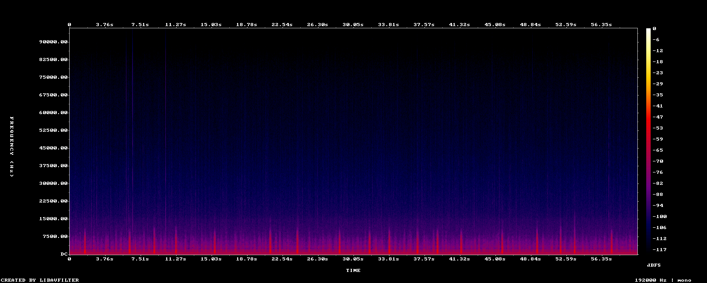

Trial recording
Site TBD · full clip ~597 KB MP3 · also a 30 s preview

Full (~60 s)
Preview (30 s)
Trial clip from Derek’s upload (≈60 s WAV → compressed MP3). Spectrogram from the first 30 s.
Site TBD · full clip ~597 KB MP3 · also a 30 s preview

Full (~60 s)
Preview (30 s)